Two photos taken from the same spot, with the camera only rotated between them, are related by a homography: a 3 × 3 projective transform that maps every point in one photo to the matching point in the other. This part recovers that transform from a handful of clicked point pairs, warps images with it, and uses it in two ways: to make a slanted poster look straight-on, and to stitch overlapping photos into a single wider image. Everything is computed at a working resolution of 1600 px on the long side, with no library homography or warping functions.
Each set below was shot on an iPhone 16 with the 1× lens, holding the phone in one place and rotating it between shots, a few seconds apart. Each pair shares a large overlapping region.
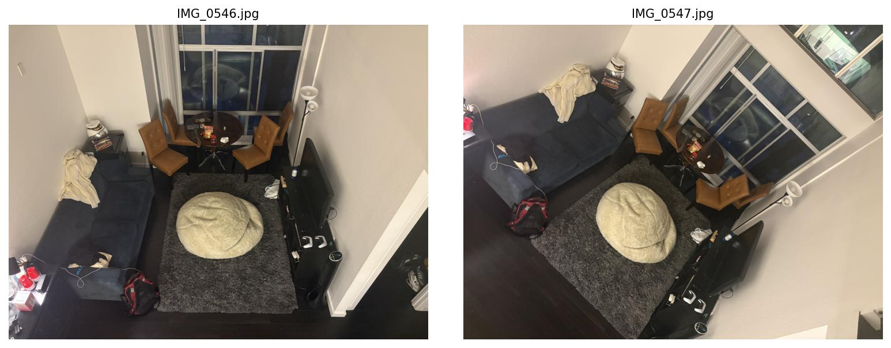
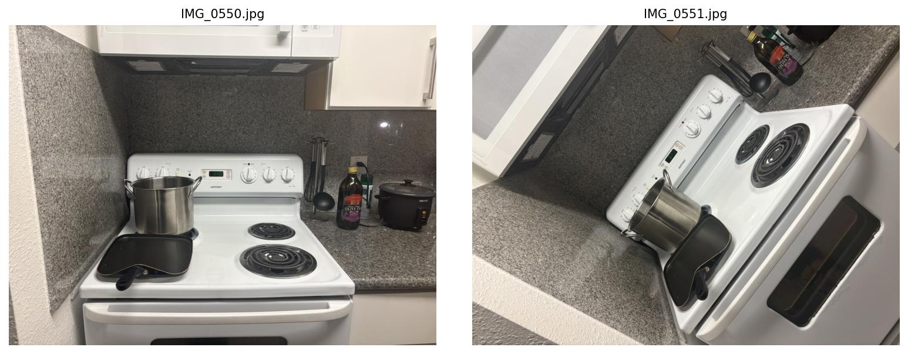
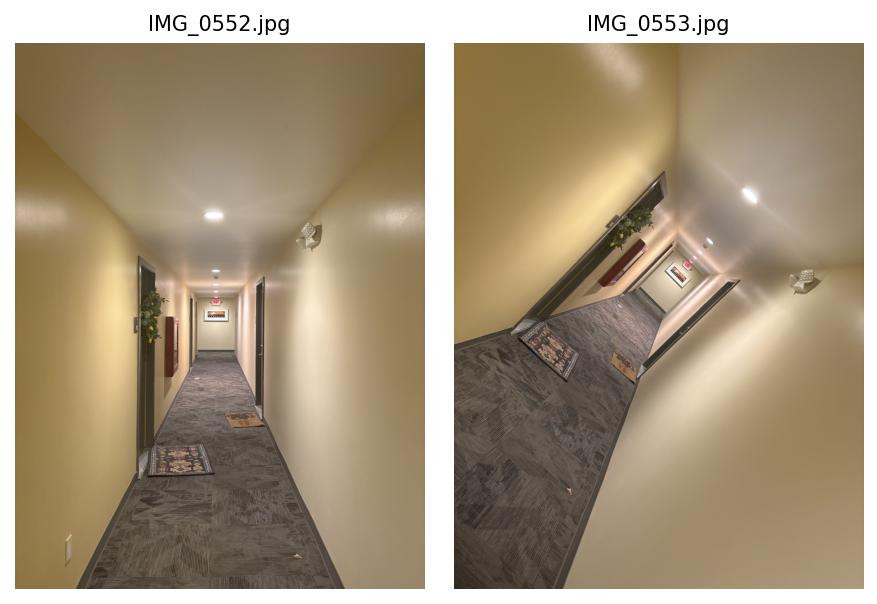
Two more single photos, of flat posters shot at an angle, are used for rectification in A.3.
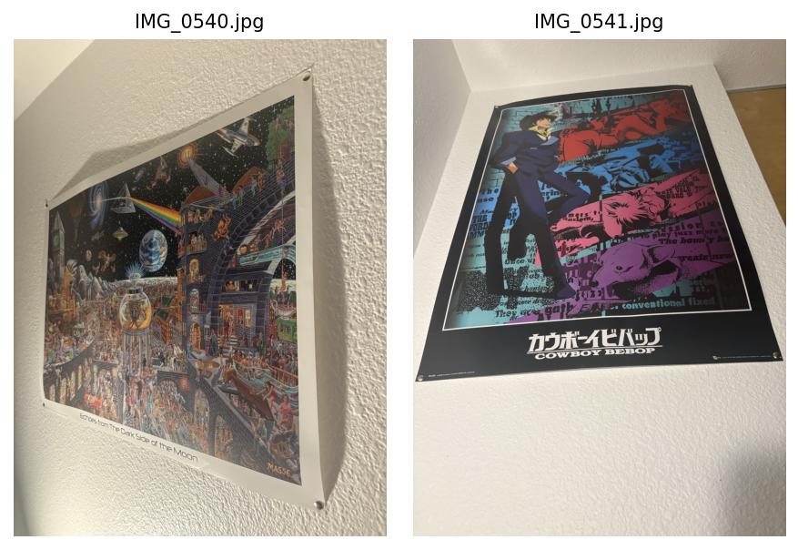
A homography takes a point (x, y) in one image to (x′, y′) in the other, using homogeneous coordinates:
⎡ w·x′ ⎤ ⎡ a b c ⎤ ⎡ x ⎤ ⎢ w·y′ ⎥ = ⎢ d e f ⎥ ⎢ y ⎥ ⎣ w ⎦ ⎣ g h 1 ⎦ ⎣ 1 ⎦The bottom-right entry is fixed at 1, leaving 8 unknowns.
Dividing out w = gx + hy + 1 and rearranging gives two equations
that are linear in the unknowns, one for x′ and one for y′. Each correspondence adds two
rows to a system A h = b:
⎡ x y 1 0 0 0 −x·x′ −y·x′ ⎤ ⎡ a … h ⎤ᵀ ⎡ x′ ⎤ ⎣ 0 0 0 x y 1 −x·y′ −y·y′ ⎦ = ⎣ y′ ⎦Four correspondences give exactly 8 equations. More than four make the system overdetermined, and it is solved by least squares, which averages out small clicking errors.
def computeH(im1_pts, im2_pts):
A, b = build_system(im1_pts, im2_pts) # 2n x 8 and 2n, rows as above
h, *_ = np.linalg.lstsq(A, b, rcond=None)
return np.append(h, 1).reshape(3, 3)Points were clicked with a small matplotlib tool: a point in the first image, then the same point in the second, eight times per set, on sharp corners spread across the overlap. For each set, H maps the second image into the first image's frame.
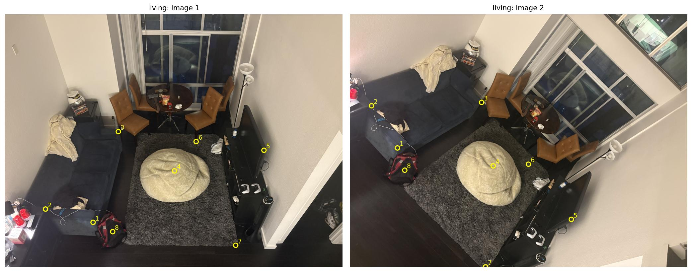
For this set, the first rows of the system (each correspondence contributes two):
A = b =
[ 225.88 634.20 1 0 0 0 −94286.68 −264726.23 ] [ 417.42 ]
[ 0 0 0 225.88 634.20 1 −223046.25 −626241.09 ] [ 987.46 ]
[ 102.87 433.91 1 0 0 0 −19740.64 −83267.71 ] [ 191.90 ]
[ 0 0 0 102.87 433.91 1 −95088.96 −401093.46 ] [ 924.38 ]
… (16 rows in total)and the recovered homography:
H_living = [ 0.67622 0.70493 −181.239 ]
[ −0.71864 0.72176 695.361 ]
[ −0.00003 0.00002 1 ]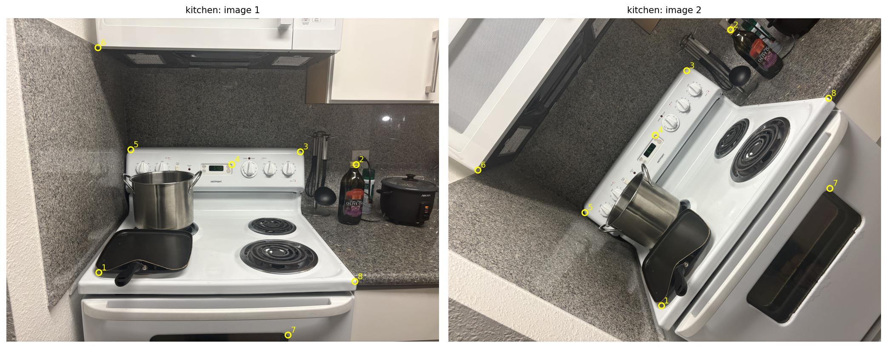
H_kitchen = [ 0.57239 −0.80006 733.807 ]
[ 0.79286 0.56323 −308.436 ]
[ 0.00001 −0.00002 1 ]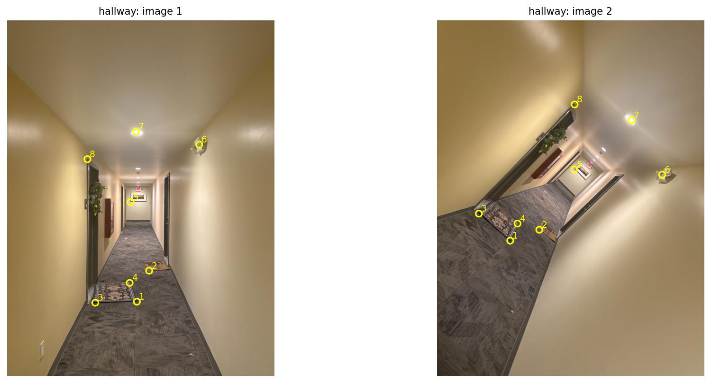
H_hallway = [ 0.60590 0.53619 −244.949 ]
[ −0.63169 0.47672 787.675 ]
[ −0.00003 −0.00016 1 ]For the living room, the upper-left 2 × 2 block of H is close to a 46° rotation, which matches how far the phone was turned between the two shots. The small bottom-row entries g and h add the perspective change.
Both warping functions use inverse warping. Pushing every source pixel forward through H would leave holes wherever the image gets stretched. Instead, for every pixel of the output, H−1 gives the location it comes from in the source image, and the source is sampled there. The output size is the bounding box of the four source corners mapped through H. Output pixels whose source location falls outside the image get alpha 0, which A.4 uses as a mask.
The two functions differ only in how they sample at a non-integer source location, with pixel (0, 0) at the center of the top-left pixel:
x0, y0 = np.floor(x).astype(int), np.floor(y).astype(int)
x1, y1 = np.minimum(x0 + 1, w - 1), np.minimum(y0 + 1, h - 1)
wx, wy = (x - x0)[:, None], (y - y0)[:, None]
top = (1 - wx) * im[y0, x0] + wx * im[y0, x1]
bottom = (1 - wx) * im[y1, x0] + wx * im[y1, x1]
out[alpha] = (1 - wy) * top + wy * bottomRectification tests the whole pipeline on a single photo. The four corners of a poster are clicked (top-left, top-right, bottom-right, bottom-left) and paired with the corners of a rectangle with the poster's 3:2 aspect ratio. The homography between them, applied to the photo, makes the poster look as if it had been shot straight-on. The output is cropped to the rectangle plus a small margin.
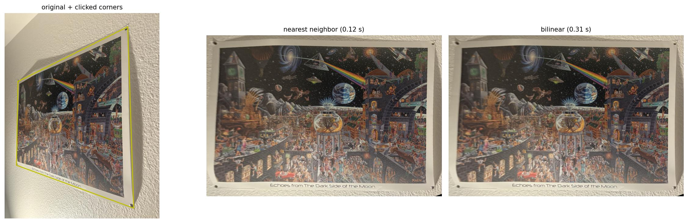
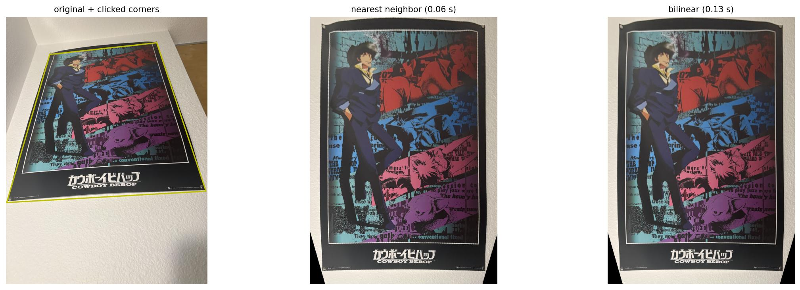
Both posters come out rectangular, with their borders parallel to the image edges and the printed text running level. The wall around each poster is warped by the same homography, which is why the edges of the output are slanted.
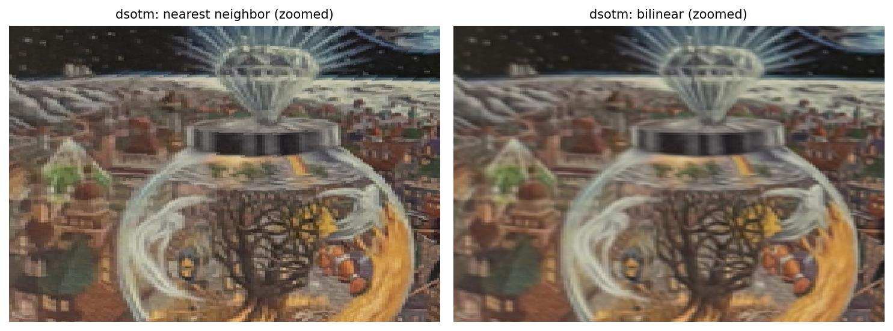
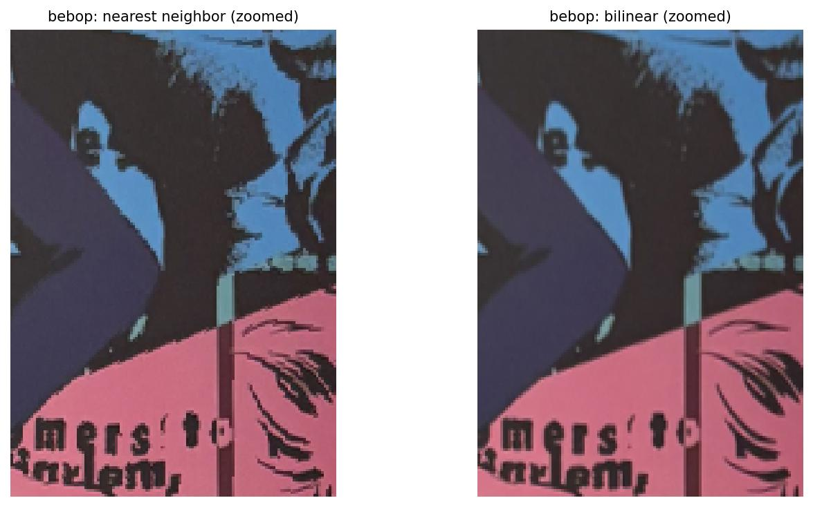
| poster (output size) | nearest neighbor | bilinear |
|---|---|---|
| Dark Side (1653 × 1137) | 0.123 s | 0.308 s |
| Cowboy Bebop (713 × 1023) | 0.063 s | 0.135 s |
Quality. Nearest neighbor copies whole source pixels, so where the warp stretches the image, one source pixel fills a small block of output pixels. Diagonal and curved edges turn into visible stair steps: the fishbowl's rim, the rays above it and the lettering on the Bebop poster. Bilinear blends neighboring pixels, so the same edges stay smooth and continuous. Because every output value is an average, fine texture comes out slightly softer.
Speed. Nearest neighbor reads one pixel per output pixel. Bilinear reads four and does a few multiplications, which made it about 2 to 2.5× slower here. Both versions are fully vectorized with numpy, so even the slower one takes a fraction of a second at this resolution. Bilinear is the default for the mosaics below.
For each set, the first image stays fixed and the second is warped into its frame with the A.2 homography:
low = (w₁ · blur(I₁) + w₂ · blur(I₂)) / (w₁ + w₂) high = I₁ − blur(I₁) where w₁ ≥ w₂, otherwise I₂ − blur(I₂) out = low + high
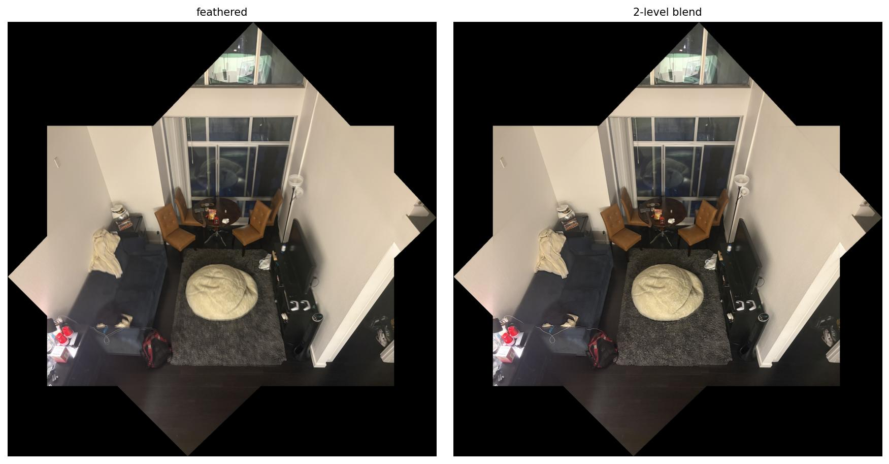
With a plain weighted average, both images contribute everywhere in the overlap, so any small misalignment shows up as a faint double image of fine detail. The 2-level blend keeps the same smooth transition in brightness while each fine edge comes from a single image.
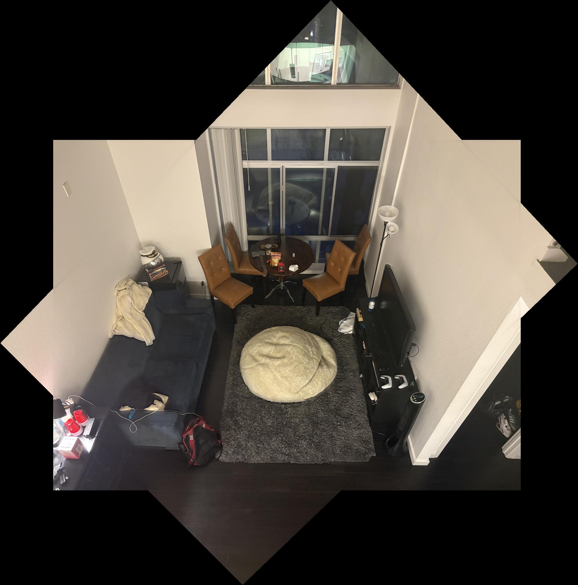
The second photo extends the view up to the loft window and out past both side walls, while the chairs, rug, TV stand and window frames line up across the overlap.
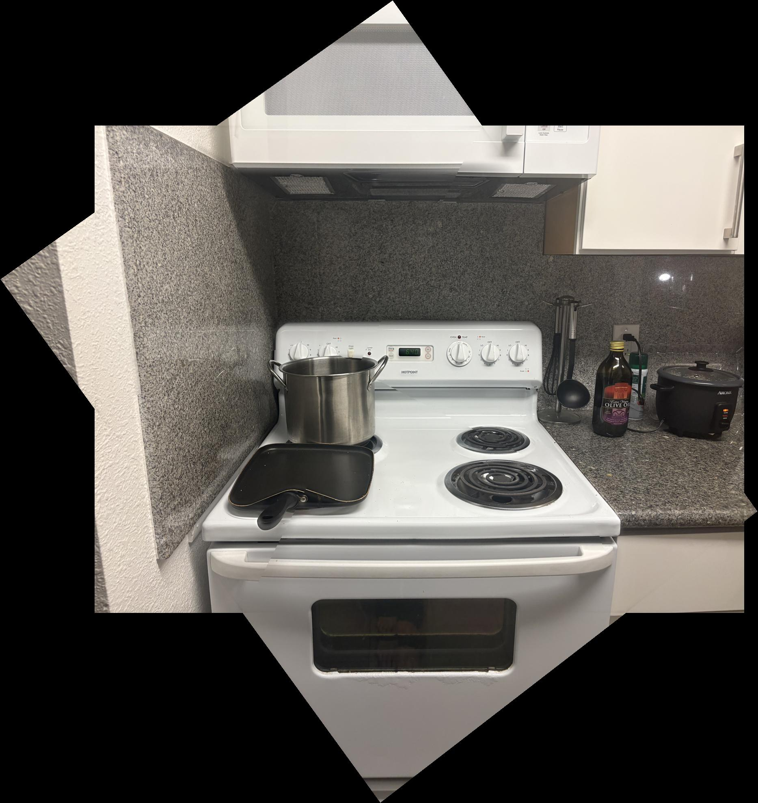
The tilted second photo adds the full oven door below the stove and the underside of the microwave above it.
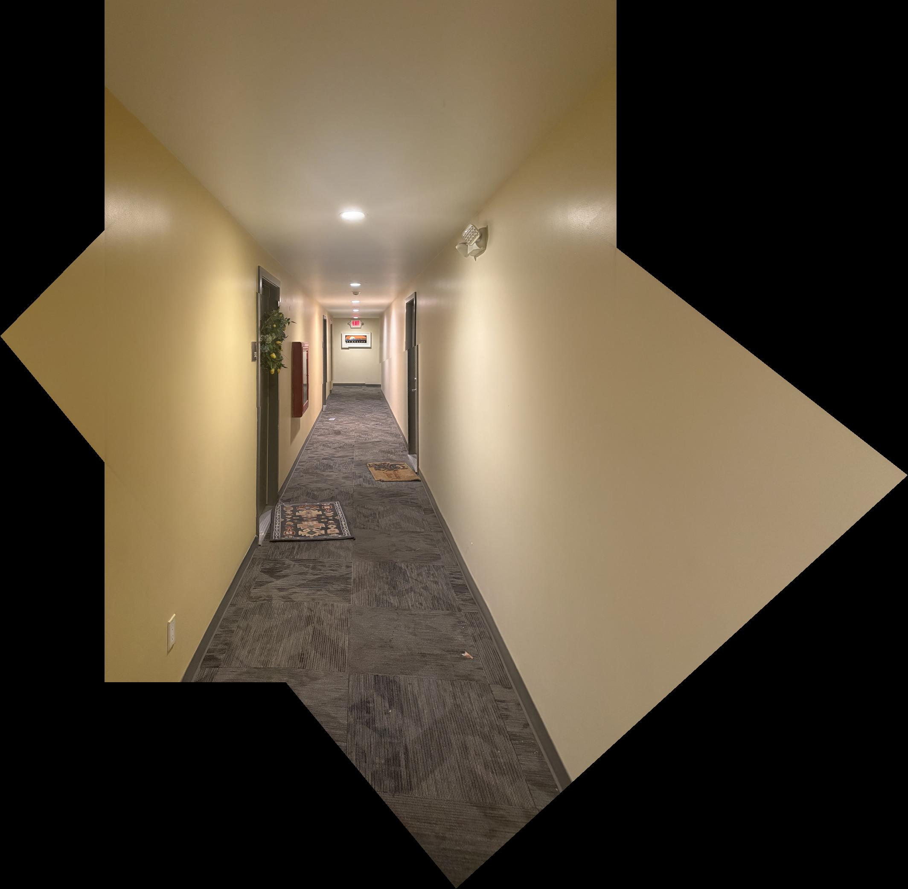
The second photo was rolled about the lens, so once it is warped back it fills in a diagonal band of extra floor at the bottom and wall on both sides.
Part A needed hand-clicked correspondences. Part B finds them automatically, following a simplified version of Multi-Image Matching using Multi-Scale Oriented Patches (Brown, Szeliski and Winder, 2005): detect corners, describe the patch around each one, match descriptors between the two photos, and use RANSAC to keep only the matches that agree on a single homography. The Part A warping and blending code then builds the mosaic. Everything runs on the same photos at the same 1600 px resolution.
Corners come from the provided Harris detector (single scale, σ = 1), which returns every local maximum of the corner response: about 54,000 per photo. Simply keeping the strongest ones bunches them into the most textured areas. Adaptive non-maximal suppression picks corners that are both strong and spread out. Each corner gets a suppression radius, the distance to the nearest corner that is clearly stronger than it:
r_i = min | x_i − x_j | over all j with f(x_i) < 0.9 · f(x_j)f is the Harris strength. The 500 corners with the largest radii are kept, chosen from the 5,000 strongest.
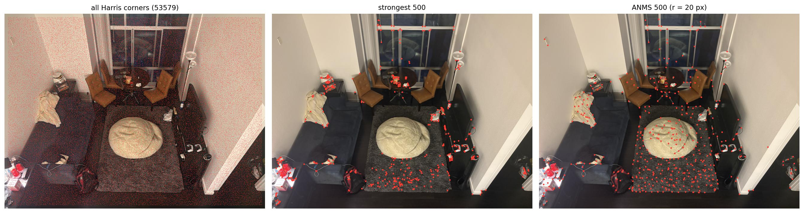
The 500 strongest corners crowd onto the rug, the table and the cluttered corners of the room. The ANMS corners cover the whole image, with no two closer than 20 px, which gives the matching step features everywhere the photos overlap.
Each descriptor is an 8 × 8 grid of samples taken every 5 px across the 40 × 40 window around a corner, from the image blurred with σ = 2. Sampling coarsely from a blurred image makes the descriptor tolerant of small errors in corner position. Each descriptor is then normalized to mean 0 and standard deviation 1 (bias/gain normalization), so a brightness or contrast change between photos does not affect it.
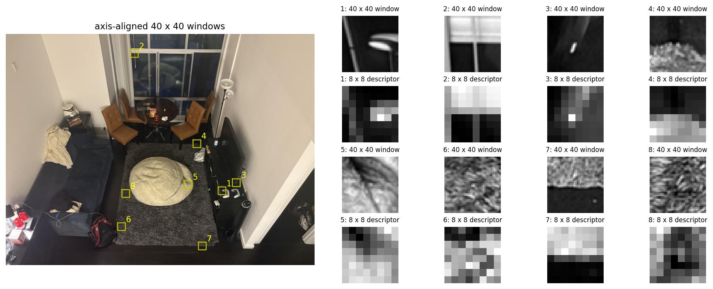
The two photos in each set differ by an in-plane rotation of 40° to 55°, so an axis-aligned window around the same corner contains a rotated view of the scene in each photo. Following Section 2 of the paper, each corner's orientation is the direction of the image gradient after blurring with σ = 4.5, and the 8 × 8 sampling grid is rotated to that direction.
theta = orientations(gray, pts) if oriented else np.zeros(len(pts))
X = pts[:, 0, None, None] + cos(theta) * u - sin(theta) * v # u, v: 8 x 8 grid, spacing 5
Y = pts[:, 1, None, None] + sin(theta) * u + cos(theta) * v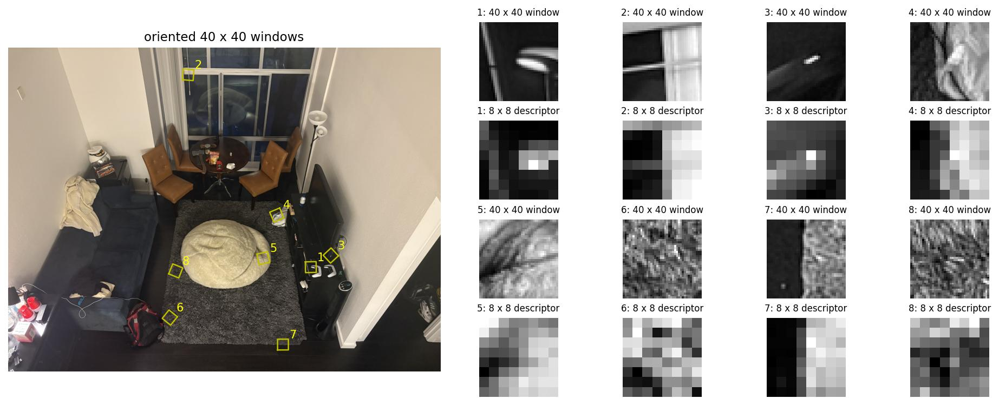
For every descriptor in photo 2, the two nearest descriptors in photo 1 are found by squared Euclidean distance. A match is kept only when the closest one is much closer than the second closest (Lowe's ratio test), since a correct match should stand out from everything else:
keep if e_1NN / e_2NN < 0.4e is the squared distance between descriptors. In Figure 6b of the paper, correct matches fall mostly below 0.4 and incorrect ones mostly above it.
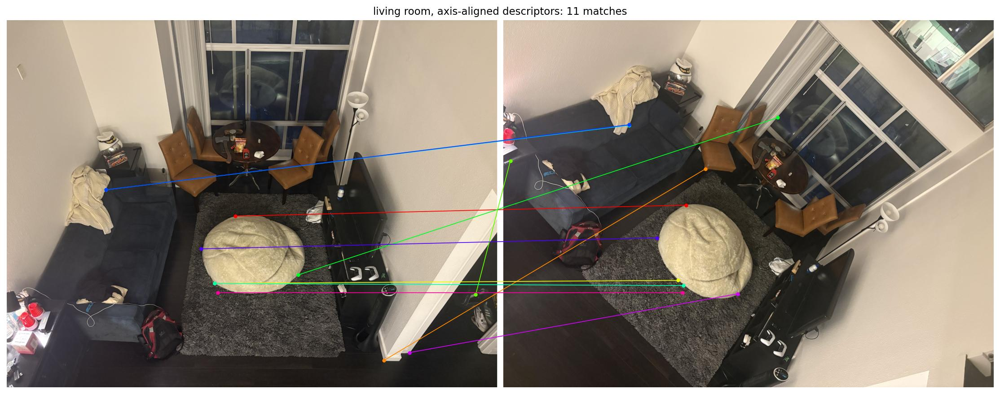
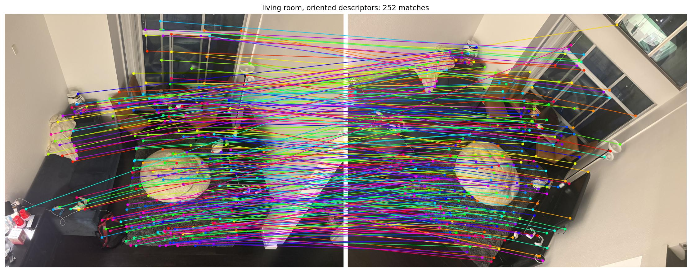
| set | axis-aligned matches | oriented matches |
|---|---|---|
| living room | 11 | 252 |
| kitchen | 4 | 183 |
| hallway | 0 | 183 |
With the rotation between photos, the oriented descriptors produce the matches used for the rest of Part B.
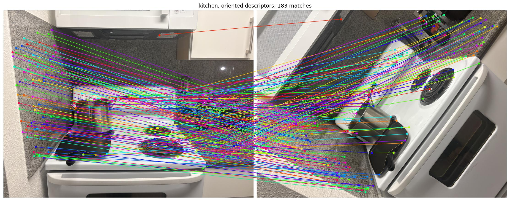
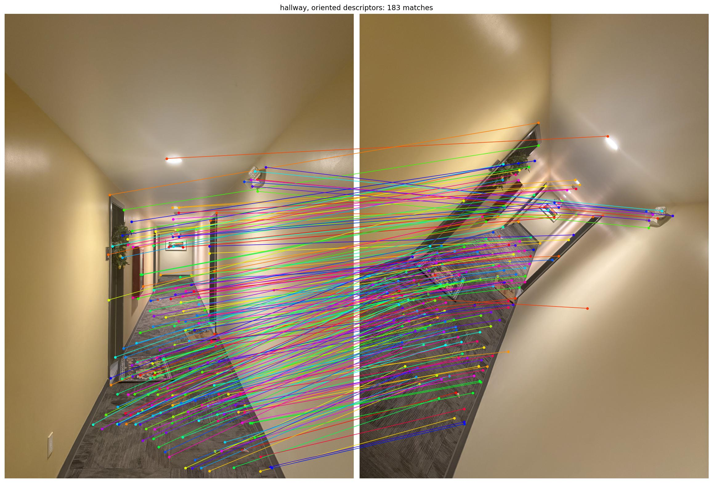
The ratio test removes most bad matches, but a homography fit by least squares can be pulled far off by even a few remaining ones. 4-point RANSAC fits only to matches that agree with each other:
computeH from Part A.for _ in range(n_iter):
sample = rng.choice(len(p1), 4, replace=False)
H = computeH(p2[sample], p1[sample])
inliers = np.linalg.norm(apply_H(H, p2) - p1, axis=1) < eps
if inliers.sum() > best.sum():
best = inliers
return computeH(p2[best], p1[best]), bestThe automatic homography goes into the same mosaic function as Part A, with the same
2-level blend. Each set below shows the RANSAC inliers, then the manual (Part A) and automatic mosaics
side by side.
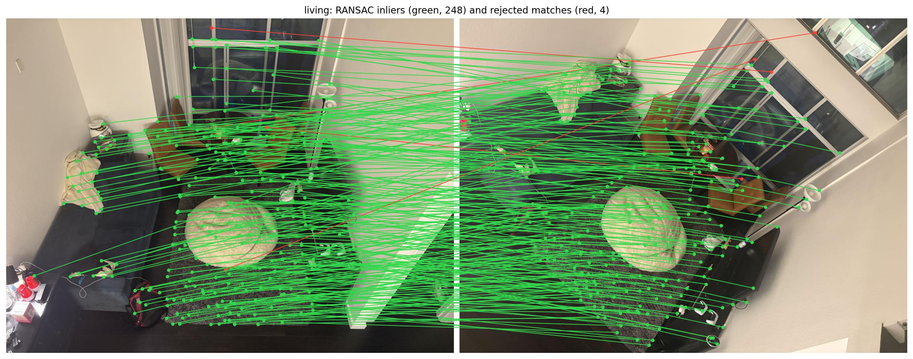
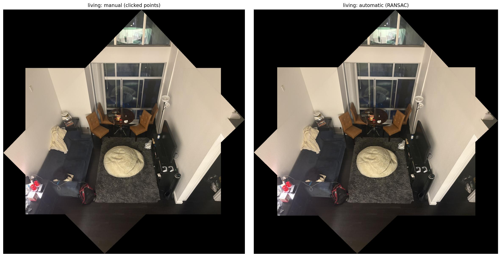
The two mosaics are nearly identical. The automatic homography comes from 248 inliers spread across the whole overlap, compared with 8 clicked points.
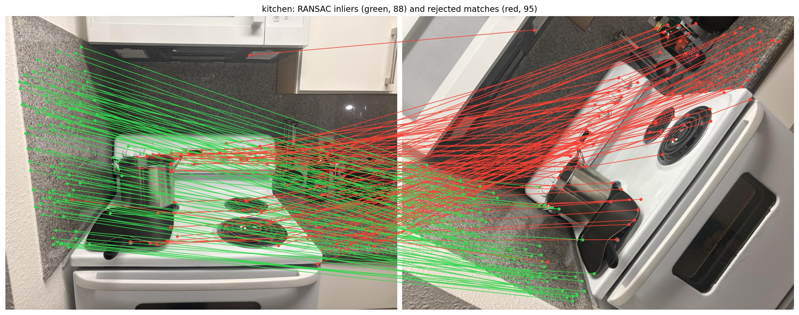
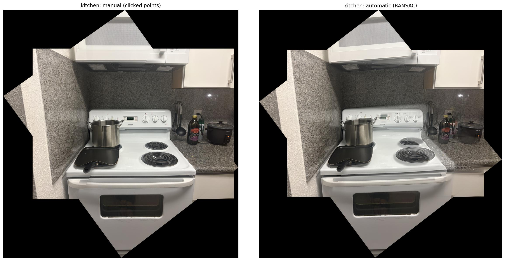
The stove sits about a meter in front of the backsplash, so small camera movement between the shots shifts the two surfaces by different amounts. RANSAC keeps the largest consistent set, the matches on the backsplash wall, so the automatic mosaic aligns the wall and counters. The manual points were clicked on the stove, so the manual mosaic aligns the stove.
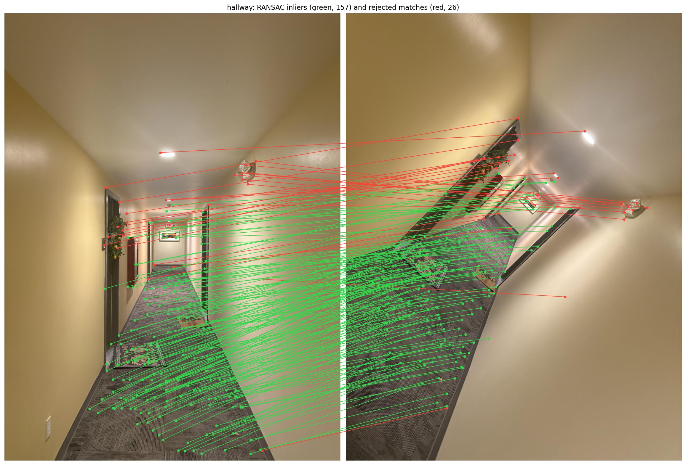
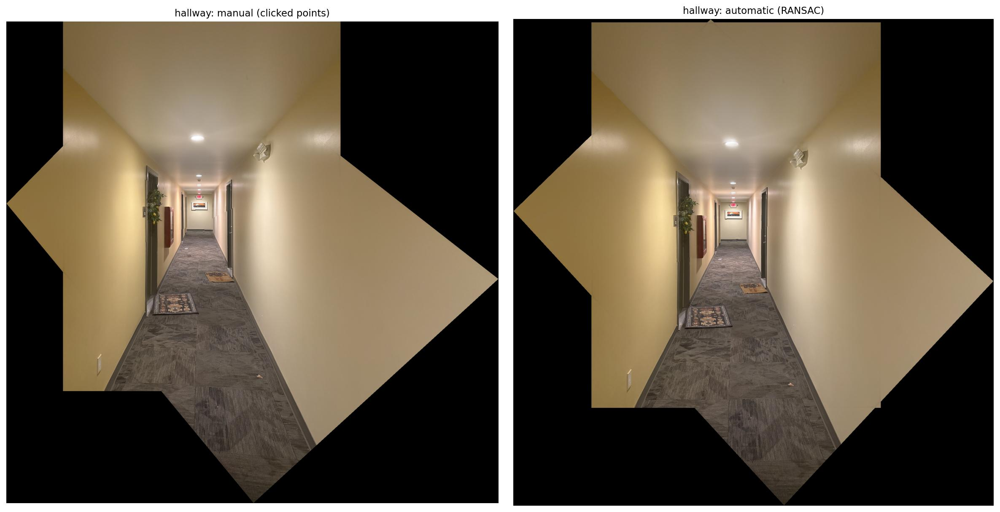
The automatic mosaic lines up the right-hand door frame and the far end of the hallway cleanly. With 157 inliers along both walls and the floor, the homography is constrained across the full overlap.